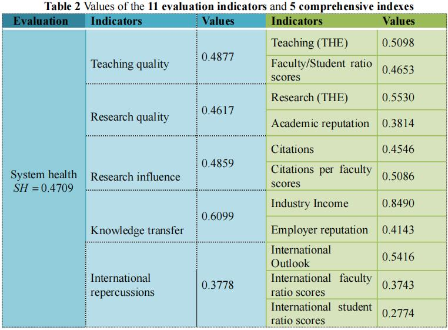
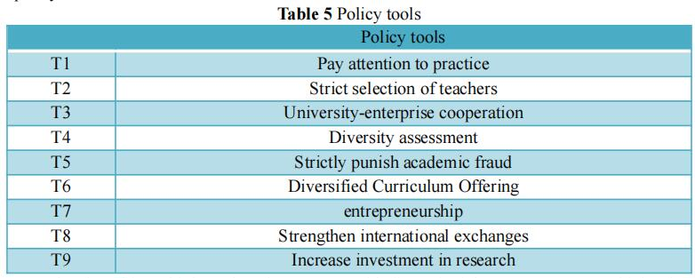

Towards a healthy and sustainable higher education system
2021.2.9
by Vircorns
Summary
A system of higher education has value both as an industry itself and as a source of trained and educated citizens for the nation’s economy. In order to assess the health of a system of higher education at a national level and reach a more healthy and sustainable system,
we establish the Comprehensive Evaluation Model and other models based on the regression-grey analytic method.
In task 1,
in order to assess the health of any nation’s system of higher education system, we establish a comprehensive evaluation model based on entropy weight method (EWM) and coefficient of variation method(CVM).
First of all, for the sake of numeric measurement of the higher education system health, we introduce the evaluation index(SH).
Furthermore, we select 11 indicators closely related to the higher education system from five aspects primarily.
And then we entropy weight method (EWM) and coefficient of variation method(CVM) are applied to integrate the indexes into the system health index(SH).
Moreover, fuzzy cluster analysis(FCA) is employed to clarify countries’ SH into four: great, good, average and poor.
In task 2
we apply the comprehensive evaluation model to several countries, and select China as a research object and analyze the correlation between its SH
and the 5 comprehensive indexes to analyze the country's higher education system.The results are shown in 5.2.2.
In task 3,
in order to propose an attainable and reasonable vision for our selected nation’s system, we establish a predicting and evaluation model based on the regression-grey analytic method.
First of all, we employ the regression equation to reflect the specific function relationship between indicators and national higher education system health.
Next, to research the current growth plan for our selected nation’s higher education health and sustainable system, we calculate rational grade of each metric by use of related data with method of Grey Relational Analysis(GRA).
In task 4,
we compare the performance between current plan and our plan by setting hypothesis and extending data with Grey Forecasting Model.
Next, We regulate the data according to the plan.
Finally, to measure the health of both the current system and new system for our selected nation, we put the data into the regression equation, respectively.
In task 5,
based on the three key steps from GRA to formulate a plan, we set goals the country by virtue of the evaluation results above.
Besides, we indentify the existing strengths and barriers based on unique characteristics such as national conditions, expected growth rates, economic and social in order to find the opportunities and challenges for our selected country’s higher education.
Moreover, with the method of PCA, we determine the principle components of each first class indicator.
By integration of these key information, as well as reference to 100 policies for implementation, we formulate targeted policies(Table 6) and an implementation timeline(5.5.2).
In task 6 and 7,
with application of the evaluation method we form, we compare the performance between current plan and our plan by setting hypothesis and extending data with Grey Forecasting Model.
The results show that our plans will exert increasingly positive impacts on the smart growth of national higher education system as time goes by.
Finally, we test the sensitivity of our model, conclude the strengths and weakness, and give our thoughts about future work.
Key Words: Comprehensive Evaluation Model, System health index, Grey model, Regression.
I. Introduction
1.1 Problem Background
A system of higher education is an important element in a nation’s efforts to further educate its citizens beyond required primary and secondary education,
and therefore has value both as an industry itself and as a source of trained and educated citizens for the nation’s economy. And in the wake of adjustments required during the current pandemic,
nations have had the opportunity to reflect on what is working and what could be even better. In this problem, you are to develop a model to measure and assess the health of a system of higher education at a national level,
to identify a healthy and sustainable state for a given nation’s higher education system, and to propose and analyze a suite of policies to migrate a nation from its current state to your proposed healthy and sustainable state.
Therefore, the establishment of a more healthy and sustainable system has become an issue that all countries in the world need to consider.
1.2 问题重述
In this problem, we are to develop a model to measure and assess the health of a system of higher education at a national level, to identify a healthy and sustainable state for a given nation’s higher education system, and to propose and analyze a suite of policies to migrate a nation from its current state to your proposed healthy and sustainable state.
Specifically, we are being asked to:
·develop and validate a model or suite of models that allow us to assess the health of any nation’s system of higher education;
·apply our model to several countries, and then select a nation whose system of higher education has room for improvement based on your analysis;
·propose an attainable and reasonable vision for our selected nation’s system that supports a healthy and sustainable system of higher education;
·use the model to measure the health of both the current system and proposed, healthy, sustainable system for your selected nation;
·propose targeted policies and an implementation timeline that will support the migration from the current state to our proposed state;
·use the model(s) to shape and/or assess the effectiveness of your policies; discuss the real-world impacts of implementing your plan both during the transition and in the end state, acknowledging the reality that change is hard.
II. Problem analysis
This paper emphasizes the evaluation of the national higher education system and the comprehensive analysis of its health status.
III. Assumptions
·We assume the country as an overall unit without considering the differences of regions within the country.
The assumption is a prerequisite for us to do intensive study.
·In the forecast time, the selected countries have no major conflicts and changes, and the social environment is stable.
·Each specific policy initiatives can not only play a part in certain goal,
but also a possibility in other goals in different aspects.
IV. Notations
V. Framework
5.1 Evaluation system of national higher education system
5.1.1 Primary indicator system
Since the Quacquarelli Symonds(QS) and Times Higher Education(THE) already have their evaluation systems, the evaluation criteria he has chosen are from a macroscopic and comprehensive perspective.
In order to develop a strong relationship between the evaluation system and national higher education system,
on the basis of QS rankings and THE rankings, we define evaluation indexes from three levels.
Based on QS’s Academic Survey, it collates the expert opinions of over 100,000 individuals in the higher education space regarding teaching and research quality at the world’s universities.
On the other hand, institutions(more than 1500) across the globe provide THE with information that we scrutinise rigorously to construct the World University Rankings. Therefore, we collected the data of QS and THE, and summed all the universities in each country in each index.
Finally, we deal with each index dimensionless and get 11 evaluation indexes.
The performance indicators are grouped into five areas:
· Teaching quality:Teaching (THE) , Faculty/Student ratio scores.
·Research influence:Citations(THE) , Citations per faculty scores.
·Knowledge transfer: Industry Income , Employer reputation.
·International repercussions:International Outlook , International faculty ratio , International student ratio scores.
Here we explain how we assess data from the Figure 1:
(1) Academic reputation
The highest weighting of any metric is allotted to an institution’s Academic Reputation score.
Based on QS’s Academic Survey, it collates the expert opinions of over 100,000 individuals in the higher education space regarding teaching and research quality at the world’s universities.
(2) Employer reputation
Students will continue to perceive a university education as a means by which they can receive valuable preparation for the employment market.
It follows that assessing how successful institutions are at providing that preparation is essential for a ranking whose primary audience is the global student community.
The Employer Reputation metric is based on almost 50,000 responses to QS Employer Survey, and asks employers to identify those institutions from
which they source the most competent, innovative, effective graduates. The QS Employer Survey is also the world’s largest of its kind.
(3) Teaching quality:Faculty/Student Ratio Scores
Teaching quality is typically cited by students as the metric of the highest importance to them when comparing institutions using a ranking.
It is notoriously difficult to measure, but we have determined that measuring teacher/student ratios is the most effective proxy metric for teaching quality.
It assesses the extent to which institutions are able to provide students with meaningful access to lecturers and tutors, and recognizes that a high number of faculty members per student will reduce the teaching burden on each individual academic.
Therefore, we take the sum of the faculty / student ratio of each country as the faculty / student ratio score of this country to measure the teaching quality of this country.
(4) Citations per faculty scores
Teaching is one key pillar of an institution’s mission. Another is research output. We measure institutional research quality using our Citations per Faculty metric.
To calculate it, we take the total number of citations received by all papers produced by an institution across a five-year period by the number of faculty members at that institution.
To account for the fact that different fields have very different publishing cultures — papers concerning the Life Sciences are responsible nearly half of all research citations as of 2015 —we normalize citations.
This means that a citation received a paper in Philosophy is measured differently to one received for a paper on Anatomy and Physiology, ensuring that, in evaluating an institution’s true research impact, both citations are given equal weight.
We use a five-year publication window for papers, so for this edition we looked at papers published from 2014 to 2018. We then take a look at a six-year citation window;
reflecting the fact that it takes time for research to be effectively disseminated. In this edition we look for citations from 2014-2019.
All citation data is sourced using Elsevier’s Scopus database, the world’s largest repository of academic journal data. This year, QS assessed 138 million citations from 18.5 million papers once self-citations were excluded.
(5) International faculty ratio score/International student ratio score
A highly international university acquires and confers a number of advantages. It demonstrates an ability to attract faculty and students from across the world, which in turn suggests that it possesses a strong international brand.
It implies a highly global outlook: essentially for institutions operating in an internationalised higher education sector. It also provides both students and staff alike with a multinational environment, facilitating exchange of best practices and beliefs. In doing so,
it provides students with international sympathies and global awareness: soft skills increasingly valuable to employers.
(6) Teaching (THE)
Reputation survey: 15%
Staff-to-student ratio: 4.5%
Doctorate-to-bachelor’s ratio: 2.25%
Doctorates-awarded-to-academic-staff ratio: 6%
Institutional income: 2.25%
As well as giving a sense of how committed an institution is to nurturing the next generation of academics, a high proportion of postgraduate research students also suggests the provision of teaching at the highest level that is thus attractive to graduates and effective at developing them.
This indicator is normalised to take account of a university’s unique subject mix, reflecting that the volume of doctoral awards varies by discipline.
Institutional income is scaled against academic staff numbers and normalised for purchasing-power parity (PPP). It indicates an institution’s general status and gives a broad sense of the infrastructure and facilities available to students and staff.
(7) Research (THE)
Reputation survey: 18%
Research income: 6%
Research productivity: 6%
The most prominent indicator in this category looks at a university’s reputation for research excellence among its peers, based on the responses to our annual Academic Reputation Survey (see above)
Research income is scaled against academic staff numbers and adjusted for purchasing-power parity (PPP). This is a controversial indicator because it can be influenced by national policy and economic circumstances. But income is crucial to the development of world-class research,
and because much of it is subject to competition and judged by peer review, our experts suggested that it was a valid measure. This indicator is fully normalised to take account of each university’s distinct subject profile, reflecting the fact that research grants in science subjects are often bigger than those awarded for the highest-quality social science,
arts and humanities research.
To measure productivity we count the number of publications published in the academic journals indexed by Elsevier’s Scopus database per scholar, scaled for institutional size and normalised for subject. This gives a sense of the university’s ability to get papers published in quality peer-reviewed journals. Last year,
we devised a method to give credit for papers that are published in subjects where a university declares no staff.
(8) Citations(THE)
Our research influence indicator looks at universities’ role in spreading new knowledge and ideas.The citations help to show us how much each university is contributing to the sum of human knowledge: they tell us whose research has stood out, has been picked up and built on by other scholars and, most importantly,
has been shared around the global scholarly community to expand the boundaries of our understanding, irrespective of discipline.
The data are normalised to reflect variations in citation volume between different subject areas. This means that institutions with high levels of research activity in subjects with traditionally high citation counts do not gain an unfair advantage.
We have blended equal measures of a country-adjusted and non-country-adjusted raw measure of citations scores.
(9) International outlook
Proportion of international students: 2.5%
Proportion of international staff: 2.5%
International collaboration: 2.5%
The ability of a university to attract undergraduates, postgraduates and faculty from all over the planet is key to its success on the world stage.
In the third international indicator, we calculate the proportion of a university’s total relevant publications that have at least one international co-author and reward higher volumes.
This indicator is normalised to account for a university’s subject mix and uses the same five-year window as the “Citations: research influence” category.
(10) Industry Income
A university’s ability to help industry with innovations, inventions and consultancy has
become a core mission of the contemporary global academy.
This category seeks to capture such knowledge-transfer activity by looking at how much research income an institution earns from industry (adjusted for PPP), scaled against the number of academic staff it employs.
The category suggests the extent to which businesses are willing to pay for research and a university’s ability to attract funding in the commercial marketplace—useful indicators of institutional quality.
5.1.2 Weight of indicators based on Entropy weight method
With the evaluation indicators defined above, we further determine the weights of these indicators, resulting in the combination of primary indicators.
Recalling on the Entropy Weight Method (EWM), we will carry out the standardized treatment, making the optimal and worst value of each variable after alternation be 1 and 0, respectively.
The evaluation indexes are X1 , X2,..., Xk, where Xi={xi1,xi2,...,xin}.
Among there, k and n are the number of defined evaluation indicators and sovereign countries throughout the world, where k=11.
For the sake of the cost-type indicators, the fragility of a country is proportional to the value of the indicator. And in terms of the gain-type indicators, the higher the value is,
the higher System Health the national system of Higher Education is: will be. Thus, we have
Where yij is the standardized value of each evaluation indicator of each country, max(xi) and min(xi) are the maximum and minimum value of the evaluation indicator Xi.
After standardization, we succeed in substituting yij for xij to implicate the System Health of a country’s Higher Education System. Then we introduce
According to the concepts of self-information and entropy in the information theory, we can calculate the information entropy Ei of each evaluation indicator, hence we can obtain
On the basis of the information entropy, we will further compute the weight of each evaluation indicator we defined before
Subsequently, we can derive the 5 comprehensive evaluation indicators: Teaching quality, Research quality, Research influence, Knowledge transfer, International repercussions. Hereafter this paper will be abbreviated asTQ , RQ , RI , KY ,and IR respectively.
On the basis of those calculated weights, we have
5.1.3 Weight of indicators based on Coefficient of variation method
Coefficient of variation method (CVM) utilizes the information from various indexes and achieve the weight of each index through calculating, which shows to be an objective approach to give weight.
proach to give weight. Therefor, we apply coefficient of variation method to weight these 5 indices and merge them into a comprehensive metric.
Owing to the influence of different dimension, it is hard to compare the index directly, so it needs the coefficient of variation of each index to measure the difference extent of them. The formula of each index can be expressed as:
Where Vi is the coefficient of variation of the index i,
which can also be called as standard deviation coefficient, and i means the standard deviation of the index i.
And the z1, z2, z3, z4, z5 separately meansTQ , RQ , RI , KT ,and IR . Then the weight of each index comes to us:
By this way, we are able to achieve the weight of each index without any subjective impression. Finally, after getting the weight, we can derive the comprehensive evaluation modal based on the higher education system health index (SH), where it is:
5.1.4 Fuzzy Cluster Analysis
Combined with the comprehensive Evaluation System we established before, we will import data of various countries and calculate the values of SH.
Then according to their respective values, we use Mahalanobis distance to clarify these countries as: great, good, average, and poor. Thus, we can identify a country’s higher education system health from their SH .
Because it is a conventional method, we neglect the calculation process of it.
5.1.5 Higher education system health identification
In the establishment of national higher education system health evaluation model, we assume that n is the number of sovereign countries throughout the world, which is too complicated to implement. Therefore, we select 58 countries that can fully reflect the situation according to the gathered data，which will be listed later.
Since the specific value of those indicators have been given in Table 1, hence we can calculate the SH of our selected countries and apply fuzzy clustering method to clarify these countries into 4 groups: great, good, average, and poor.
The higher the value is, the more healthy and sustainable the country’s system of Higher Education is.
The results of clustering are shown as follows.
Where—1 United States, 2 United Kingdom, 3 China, 4 Australia, 5 Germany, 6 Japan etc.
According to Figure 2 , we can determine the classification standards of a country’s higher education system health, once the value ofTQ , RQ , RI , KT ,and IR is figured out.
As is shown in Figure 3, the classification standards of the 5 combined indicators and the comprehensive metric vary a little. Since their focus of attention: Teaching quality, Research quality, Research influence, Knowledge transfer,
International repercussions, and combination put the emphasis on the various higher education development of a country, the ultimate ranks of higher education system health will be different simultaneously.
The closer the color is to green, the healthier the country’s more healthy and sustainable education system will be. According to classification standards,
the comprehensive metric-health rank indicates that great countries and good countries are the overwhelming countries, succeeding in striking a balance between vectoring sustainable development.
5.2 Application and analysis of higher education system health
5.2.1 Application
Health rankings of the world's higher education systems match the health scores we have developed based on higher education systems. We choose six countries as an exampleas(examples), we can see in Figure 4.
For example, Thailand is actually unhealthy country in the world because of its poverty, weak infrastructure, and relatively basic higher education system. Similarly,
it is more sensitive to Global special circumstances, making itself the worst healthy index: poor. When it comes to developed countries like United States, its global superpower, firm infrastructure, and advanced technology determine that it has a perfect higher education system,
and will be easier to deal with Global special circumstances in this respect，such as the epidemic. Thus, it is clarified as great.
5.2.2 Higher education system health analysis of China
As can be seen from the health scores in the previous article, other countries except the United Kingdom and the United States did not score very well. As a developing country, China's education is still in the stage of development. At the same time, considering the impact of the epidemic in China in 2021,
this paper believes that China's higher education system is very suitable for research.
Through the analysis of its health.

It is clear that China has achieved good results in terms of knowledge transfer and teaching quality. Therefore, we can choose to further play the Chinese characteristics and improve the health score through the encouragement and further implementation of relevant policies.
In addition, China's international repercussion needs to be strengthened. The reason is that due to the outbreak of the COVID-19,
the score of the proportion of international students and the score of the proportion of international teachers are inevitably affected. Compared with the data in 2020, there is a significant decline, but the influence in other aspects is small. Therefore, it can be concluded that China has a good performance in terms of stability,
but there is still room for improvement.
5.2 Research on the influencing factors of higher education system
5.2.1 Construction of multiple linear regression model
In order to propose an attainable and reasonable vision for your selected nation’s system that supports a healthy and sustainable system of higher education, we need to analyze more comprehensively the impact of various factors in model 1 on China's higher education system
Where `Z_i(i=1,2,3,4,5)` is the factor of multiple linear regression among the five selected influencing factors,
`β_i(i=1,2,3,4,5)` is the corresponding coefficient, `ε~N(0, σ^2)` represents the random error.
On this basis, the quantitative relationship between the indicators is studied, and the regression equation is further determined for prediction and analysis
We use SPSS software as a statistical analysis tool, and input the data after clustering into the software to process the data of each parameter of the multiple regression model, and then carry out the least square estimation to obtain the estimated values of parameters and the values of various conventional test statistics.
According to the results in table 5, we can get the multiple linear regression equation:
After standardization, we got the linear regression equation:
5.2.2 Result analysis and model checking
(1) Goodness-of-fit test and F examination
Goodness of fit test and F test. According to the results in table 3,
the R-square is greater than 0.999, and the modified R-square is greater than 0.999. The two data show that the model fits the sample very well.
We conduct F-test and first propose hypothesis `H0: β_1=β_2=β_3=β_4=β_5=0`. Given the significance level `α=0.05`,
it can be found in the F test table that the critical value of degree of freedom `k-1` and `n-k` is `F_α(k-1,n-k)` (n is the number of samples, k is the number of independent variables).
From table 4, we can draw `F=674.281>F_α(k-1,n-k)`.
Therefore, we reject the original hypothesis, indicating that the regression equation is significant. That is: teaching quality, research quality, research influence, knowledge transfer and international reviews have significant effects on the health of the higher education system.
(2) Significance test of regression coefficients
gression effect has been selected in the regression equation,
but the overall regression effect can not show that each independent variable
`X_i(i=1,2,...,11)` is important to the dependent variable Y .
It is necessary to determine whether each independent variable `Z_i(i=1,2,3,4,5)` is significant by the value of coefficient `β_i`.
Test hypothesis `H0:β_i(i=1,2,3,4,5)`. According to the estimation results of the output parameters, we find that the critical value can be found in the F distribution table
` F_Z(1, n-m-1)
(3) Analysis of regression coefficient and proposing of vision
Teaching quality, Research quality, Research influence, Knowledge transfer and International repercussions were positively correlated to Higher Education System Health.
According to the above regression model, China has a significant and large coefficient in terms of teaching quality and knowledge transfer. Therefore, based on China's actual national conditions,
relevant policies can be formulated for these two aspects[
In terms of teaching quality, China can make the curriculum more diversified, covering literature, philosophy, art, science and other fields, so as to increase students' scope of knowledge, cultivate interdisciplinary thinking mode and innovation consciousness,
and make use of what they have learned, which is more conducive to the formation of critical thinking. In addition, compared with American higher education, China can learn from the phased and diversified assessment method of the University of Chicago, which pays attention to the assessment of students' practical ability,
emphasizes the mastery of knowledge and the application in practice, and has comprehensive thinking ability and innovation consciousness.
In terms of knowledge transfer, China should strengthen practical teaching and school-enterprise cooperation. At present, the overall concept of China's education system is still focusing on theory rather than practice, mainly teaching in class. The curriculum system is relatively closed,
and the content of the curriculum is out of touch with the actual entrepreneurship. Moreover, teachers engaged in entrepreneurship education in Chinese colleges and universities generally lack practical experience in entrepreneurship, so they cannot really integrate entrepreneurship theory into practical teaching, and even there is a serious disconnection between theory and practice.
Therefore, entrepreneurs or self-employed entrepreneurs with academic backgrounds in industrial enterprises can be invited to offer courses, and extensive cooperation can be carried out with them to enable them and their enterprises to participate in the research of innovation and entrepreneurship in universities.
Calculated scores before and after the adjustment, as Figure 5, demonstrate the effectiveness of the policy changes in achieving a healthy and sustainable higher education system in China.
5.3 Measure the growth plan of China’s higher education
5.3.1 Application of Grey Relational Analysis
On account of the complicated and uncertain correlation between the second class indicators and the first class indicators,
it is hard to analyze their explicit effects on the goals of 5 Zi's if we consider approaches with perfect information. Grey Relational analysis (GRA) is a branch of Grey system theory.
It can capture the interactions among factors and indicate the grey relational grade of each indicator.
Here we make use of GRA to analyze the developing status, the steps of GRA are as follows.
Step 1. Normalization based on classification of indicators.
According to the goals and directions of their impact, the indicators can be divided into 3 types, "higher is better" indicators, "lower is better" indicators and "middle is better" indicators. Refer to Table 5 and 5.2.2,
we know that all the indicators are the "higher is better" indicators.
So we can have the method of maximum difference normalization for the "higher is better" indicators
Step 2. Choose the reference series
The reference series is a data sequence that reflects the behavioral characteristics of the system. Since scores can well reflect the higher education system health. Therefore, the scores calculated above are selected as the reference sequence in this paper.
Step 3. Compute grey rational coefficient
Compute grey rational coefficient γij with respect to the jth second class indicator of the first class indicator. The equation is
And resolution ratio τ is set 0.5 to optimally improve the significance of the difference of the difference among rational coefficients.
Step 4. Calculate the rational grade
Calculate the rational grade of each first class indicator respectively by taking the average of its rational coefficient.
where n is the number of second class indicators of the ith first class indicator
The rational grade demonstrates the connection between the plans we develop and the higher education system health growth. The larger the value of rational grade of the indicator is,
the higher the success of the plan implied by this indicator will be.
5.3.2 The Evaluation Results
Soon after the processing of data, we calculate the rational grade of each secondary class indicator of China. We show the GRA results in table 6.
For a depict comparison, we draw a radar chart as showed in figure 6.
To analyze how successful the Chinese higher education system health’s current growth plan is, taking the average value of indicators for those countries which have implemented smart growth for a long time as our reference standard, we define four degrees of growth with reference to the literature as follows.
On account of the boundaries of four degrees are not exact, the ranges overlap.
-Great growth:with value of rational grade between 0.7~1.
-Good growth:with value of rational grade between 0.5~0.8.
-Average growth:with value of rational grade between 0.2~0.6.
-Poor growth:with value of rational grade between 0.1~0.3.
Comparing the rational grade to the range of four degrees, we infer that:
-The Chinese higher education system proposed in this paper has achieved a degree of smart growth in some extent.Because most of cities have more or less implement the method of smart growth
-China has comparitively huge potentials to reach a high smart growth. It’s obvious that there is still a long way to go to keep up with those countries which implement long-term smart growth.
Because the rational grade is lower than 0.8 for each metric.
-China has performed well in knowledge transfer, but still falls short in the research quality and teaching quality
5.4 Growth plans for China’s higher education
With the analysis above, China still has a long way to go in achieving a healthy and sustainable higher education system.
In order to improve the current plan to support the three E's of smart growth, we formulate the smart growth plan in order of following three steps:
A. Setting the goals, B. identifying existing strengths and barriers, C.
Selecting the right policy tools and initiatives.
5.4.1 Goals for system health
Based on the analysis in section 5.3.2, development of China’s higher education system is not as well as the reference countries in all aspects of five Zs, so the ultimate goals for China’s higher education system are to be more rational, healthy and sustainable.
5.4.2 Identifying existing strengths and barriers based on characteristics
The unique characteristic refers to China's national conditions, expected growth rates, and economic, social and other aspects of development. Here we analyze the strengths or opportunity,barriers or challenges during the process of getting to the development goals.
(1) Strengths
As a developing country, China has good prospects in terms of higher education, so it can better reflect the impact of policy implementation. In addition, Chinese people have good executive ability and will actively respond to government policies.
Besides, China is actively opening up and playing an increasingly important role in international repercussions.
(2) Barriers
China's education system has been closed for a long time, and has become rigid and patterned. As a result, neither teachers nor students will quickly adapt to the policy change. Schools also need a lot of time and energy to find the right method.
5.4.3 Selecting the policy tools and initiatives
According to the analysis, China performs well in knowledge transfer, but poorly in the research quality and teaching quality.
Meanwhile, combined with the above regression analysis, China is significant in terms of teaching quality and knowledge transfer. Therefore, the plan should focus first on teaching quality and knowledge transfer, and then on improving the research quality.
Generally, a policy usually can not only play a part in certain indicator, but also a possibility in other indicators of different aspects. It is necessary to find the principle components for each metric. More intuitive flow refers to figure 7.
With the method of Principle Component Analysis (PCA), which is a statistical procedure that uses an orthogonal transformation to convert a set of observations of possibly correlated variables into set of values of linearly uncorrelated variables,
we determine the principle indicators of each metric by SPSS. Combining the principle indicators with analysis in section 4 and section 6.3.2, we roughly identify the policy tools and specific initiatives.
The policy instruments are shown in Table 5.

Plan for China’s higher education system, with five principle components, combining its current strengths and barriers, we give specific initiatives, the corresponding policy tools and the indicators involved in each initiative in table 6.
5.5 Effectiveness evaluation of plans base on gray model
We assume our plans state in 5.4.3 will basically result in the change of the following indicators. The change rate is in accordance with average level of reference representative countries.
5.5.1Targeted policies and an implementation timeline
For China’s higher education system,we propose targeted policies and an implementation timeline that will support the migration from the current state to your proposed state:
-`Z_1` mainly contributes to the teaching quality through the reform of the teaching system and the practical. We assume the value will increase by 5% in short-term (4 years), 10% in medium-term (10 years), and 15% inlong-term (30years).
-`Z_2` aims at increasing China’s research quality. Based on China’s actual conditions and the average level of other countries, we set the value increase by 3% in short-term 9% in medium-term, and 15% in long-term.
-`Z_3` aims at maintaining the present level or only result in a slight change.
-`Z_4` aims at improving international influence, we assume that it will increase by 5% in short-term, 10% in medium-term, and 15% in long-term.Besides, it causes teaching quality increase by 1% in short-term, 3% in medium-term, and 5% in long-term.
-`Z_5` aims at improving China’s industry income and employer reputation. We set he value increase by 4% in short-term 10% in medium-term, and 15% in long-term.
5.5.2 Performance of the plans over time
After data processing under the hypothesized settings, we show the distribution of the value TQ , RQ , RI , KY ,and IR in different stage of development with plans we make for each city.We give a intuitive show in figure 8.
From above figures, our plans demonstrate increasing positive effects on value of each metric, that’s to say our plans will exert better influence on the smart growth of that city as time goes by, from short-term (5 years), medium-term (10 years), to long-term (30years).
The right of figure 8 compares the projected health of China's higher education system in the short term with or without the plan. Obviously, it can be seen that the implementation of the policy can significantly improve the health of China's higher education system,
which proves that the policy proposed in this paper is effective.
5.6 Conclusion and Sensitivity analysis
Obviously, in the model of Grey Relational Analysis, the grey rational grade varies from different resolution ratio τ.We test the sensitivity of grey rational grade with and without our plan.
Taking knowledge transfer as an example, it can be seen that the grey rational grade with our plan is higher than that without the plan. And with the increase of the resolution rate, the initial increase then tends to remian unchanged. Evidently, τ=0.5 is a good choice.
Through the above evaluation, it can be considered that the policy proposed in this paper is effective. Considering the reality that change is hard, this paper argues that the real-world impact during the transition and final stage can be as follows:
Students:
During the transition period, students may be flustered by changes in curriculum and assessment methods. The increase in practical teaching and school-industry collaboration will keep students busy in college. But in the final stage, students will gradually adapt and effectively improve their ability;
Faculty:The diversified assessment methods are also a test for teachers. Teachers will also have a period of exploration, but eventually the best assessment methods will be realized. Due to the increase of practical links, the development of some teachers who only focus on theory will be hindered. To some extent,
the ultimate level of teachers will also be improved.
Schools:Schools need to further consider how to arrange courses and find the right companies to partner with. Given China's national conditions, progress in this area may be slow, and the level of cooperative enterprises may be uneven.
In the final stage, different schools will raise different levels;
Communities:Because of the diversity of knowledge students learn, they will be more helpful to the society, so that the overall quality of the improvement;
The Nation:China will see significant improvements in teaching quality and knowledge transfer due to higher education institutions' emphasis on teaching and practice. In addition, since the Covid-19 outbreak has been contained in China, scores for international repercussion will also rise. Therefore, from a comprehensive perspective,
China's higher education system will have a good development in the future.
VI. Model Analysis
6.1 Sensitivity Analysis
In real life, statistical data are often inaccurate and there may be some deviations in the inputs of our model. These deviations may affect the results of our model.
To test the robustness of our model, in this section, we will analyze the sensitivity of our Model. The results of the sensitivity analysis explain that our model shows a perfect stability.
6.2 Strengths and Weaknesses
6.2.1 Strengths
-We collected the data form QS and THE, which collates the expert opinions of over 100,000 individuals in the higher education space regarding teaching and research quality at the world’s universities.
So the evaluation index and data have strong practical significance.
-Multiple linear regression is the most basic and simple one, and has more practical significance. And the use of the regression model,
through the standard statistical method can calculate the unique result.
-We take comprehensive utilization of the methods, Grey Relational Analysis, Principle Component Analysis, and Grey Forecasting Model.
So our model is convincing and substantial.
6.2.2 Weaknesses
-Data deviation: data we collect is from multiple websites, the difference in statistical standards may result in bias conclusions. What’s more, the lack of data for more indicators may lead to the errors in evaluation system.
-Ignoring the difference of higher education throughout the country, we use the national average levels to describe the country’s higher education system health, which may reduce the accuracy of our model.
-Subjectivity: a part of subjective methods are in the model, and some indicators are born in terms of our own experience and intuition. Some may be not credible.
6.3 Future work
As discussed in the weaknesses of the models, multiple possibilities exist for the development of a more precise form of our model. Therefore, in the future, a more comprehensive
and definitive model would be developed in the following ways:
(1) More precise and comprehensive data
Our model is built and analyzed based on the assumption that all of our collected data is all reliable due to the limited time, which is relatively inconsistent with the real world. Therefore, more dependable and realistic data corresponding
to the real world is ought to be acquired by more careful researching.
(2) More indicators
Our model is based on the generalized from the financial and trade, economic and financial governance, and some other different key development areas in consideration, as the data and the time limit, this paper has chosen to represent the only aspects of some indicators, obviously cannot represent these areas, therefore,
we need more fully consider the impact of indicators.
(3) Further analysis of the impact of COVID-19
Although our model takes into account the relevant economic impacts, the actual response of both candidates to the epidemic cannot be analyzed and predicted from the available data. Therefore, its impact on the United States and China is a more complex function, including the impact of random factors,
which has not been analyzed much in this paper
VII. Reference
[1] QS World University Rankings 2021 form https://www.qschina.cn/university-rankings/world-university-rankings/2021
[2] World University Rankings 2021 form https://www.timeshighereducation.com/world-university-rankings/2021/world-ranking#!/ page/0/length/25/sort_by/rank/sort_order/asc/cols/stats
[3] Using Smart Growth STrategies to Foster Economic Developent: A Kelso,Washin gton, Case Study, Retrieved from https://www.epa.gov/sites/production/files/2015-05/documents/using-smart-growth-strate gies-foster-economic-development-kelso.pdf.
[4] 8Shan Lijie, Zhang Yuanzhe, Wu Linhai. Thinking on the Cultivation of Innovative Talents in Colleges and Universities [J]. Rural Economy and Science and Technology, 2019,30(23):286-288.
[5] P.T.harker Alternative modes of questioning in the analytic hierarchy process, Math modeling, Vol.9,No.3-5,1987.